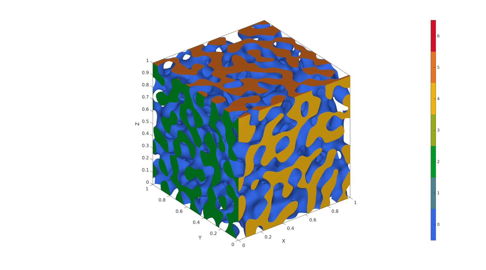

spinodoid
Below is a demonstration of the features of the spinodoid function
Contents
clear; close all; clc;
Syntax
[F,V,C]=spinodoid(M,IND,ptype);
Description
----------------------------------------------------------------------- This function generates Spinodoid microstructures which are non-periodic and stochastic bi-continous microstructures that approximate the topology observed in spinodal decomposition. The microstructures are generated using a Gaussian random field (GRF) and can be made anisotropic by tuning the anisotropy of the GRF.
Based on / how to cite: Kumar, S., Tan, S., Zheng, L., Kochmann, D.M. Inverse-designed spinodoid metamaterials. npj Comput Mater 6, 73 (2020). https://doi.org/10.1038/s41524-020-0341-6
Input structure and default values: inputStruct.isocap=true; % option to cap the isosurface inputStruct.domainSize=1; % domain size inputStruct.resolution=60; % resolution for sampling GRF inputStruct.waveNumber=10*pi; % GRF wave number inputStruct.numWaves=1000; % number of waves in GRF inputStruct.relativeDensity=0.5; % relative density: between [0.3,1] inputStruct.thetas=[15 15 15]; % conical half angles (in degrees) along xyz axes for controlling the anisotropy. Note: each entry must be either 0 or between [15,90] degrees.
Original author: Siddhant Kumar, September 2020 (contact: siddhantk41@gmail.com) -----------------------------------------------------------------------
Examples
Plot settings
cMap=parula(250); faceAlpha1=1; faceAlpha2=0.5; edgeColor1='none'; edgeColor2='none'; fontSize=15;
Example 1: Isotropic spinodoid
inputStruct.isocap=true; % option to cap the isosurface inputStruct.domainSize=1; % domain size inputStruct.resolution=100; % resolution for sampling GRF inputStruct.waveNumber=15*pi; % GRF wave number inputStruct.numWaves=1000; % number of waves in GRF inputStruct.relativeDensity=0.5; % relative density: between [0.3,1] inputStruct.thetas=[90 0 0]; % conical half angles (in degrees) along xyz % Create spinodoid [F,V,C]=spinodoid(inputStruct); % Using grouping to keep only largest group groupOptStruct.outputType='label'; [G,~,groupSize]=tesgroup(F,groupOptStruct); %Group connected faces [~,indKeep]=max(groupSize); %Index of largest group %Keep only largest group F=F(G==indKeep,:); %Trim faces C=C(G==indKeep,:); %Trim color data [F,V]=patchCleanUnused(F,V); %Remove unused nodes % Visualize surface cFigure; gpatch(F,V,C,'none'); axisGeom; camlight headlight; colormap gjet; icolorbar; gdrawnow;
Example 2: Lamellar spinodoid
inputStruct.isocap=true; % option to cap the isosurface inputStruct.domainSize=1; % domain size inputStruct.resolution=100; % resolution for sampling GRF inputStruct.waveNumber=15*pi; % GRF wave number inputStruct.numWaves=1000; % number of waves in GRF inputStruct.relativeDensity=0.5; % relative density: between [0.3,1] inputStruct.thetas=[0 0 30]; % conical half angles (in degrees) along xyz % Create spinodoid [F,V,C]=spinodoid(inputStruct); % Using grouping to keep only largest group groupOptStruct.outputType='label'; [G,~,groupSize]=tesgroup(F,groupOptStruct); %Group connected faces [~,indKeep]=max(groupSize); %Index of largest group %Keep only largest group F=F(G==indKeep,:); %Trim faces C=C(G==indKeep,:); %Trim color data [F,V]=patchCleanUnused(F,V); %Remove unused nodes % Visualize surface cFigure; gpatch(F,V,C,'none'); axisGeom; camlight headlight; colormap gjet; icolorbar; gdrawnow;

Example 3: Columnar spinodoid
inputStruct.isocap=true; % option to cap the isosurface inputStruct.domainSize=1; % domain size inputStruct.resolution=100; % resolution for sampling GRF inputStruct.waveNumber=15*pi; % GRF wave number inputStruct.numWaves=1000; % number of waves in GRF inputStruct.relativeDensity=0.5; % relative density: between [0.3,1] inputStruct.thetas=[20 15 0]; % conical half angles (in degrees) along xyz % Create spinodoid [F,V,C]=spinodoid(inputStruct); % Using grouping to keep only largest group groupOptStruct.outputType='label'; [G,~,groupSize]=tesgroup(F,groupOptStruct); %Group connected faces [~,indKeep]=max(groupSize); %Index of largest group %Keep only largest group F=F(G==indKeep,:); %Trim faces C=C(G==indKeep,:); %Trim color data [F,V]=patchCleanUnused(F,V); %Remove unused nodes % Visualize surface cFigure; gpatch(F,V,C,'none'); axisGeom; camlight headlight; colormap gjet; icolorbar; gdrawnow;
Example 4: Cubic spinodoid
inputStruct.isocap=true; % option to cap the isosurface inputStruct.domainSize=1; % domain size inputStruct.resolution=100; % resolution for sampling GRF inputStruct.waveNumber=15*pi; % GRF wave number inputStruct.numWaves=1000; % number of waves in GRF inputStruct.relativeDensity=0.5; % relative density: between [0.3,1] inputStruct.thetas=[20 20 20]; % conical half angles (in degrees) along xyz % Create spinodoid [F,V,C]=spinodoid(inputStruct); % Using grouping to keep only largest group groupOptStruct.outputType='label'; [G,~,groupSize]=tesgroup(F,groupOptStruct); %Group connected faces [~,indKeep]=max(groupSize); %Index of largest group %Keep only largest group F=F(G==indKeep,:); %Trim faces C=C(G==indKeep,:); %Trim color data [F,V]=patchCleanUnused(F,V); %Remove unused nodes % Visualize surface cFigure; gpatch(F,V,C,'none'); axisGeom; camlight headlight; colormap gjet; icolorbar; gdrawnow;


GIBBON www.gibboncode.org
Kevin Mattheus Moerman, gibbon.toolbox@gmail.com
GIBBON footer text
License: https://github.com/gibbonCode/GIBBON/blob/master/LICENSE
GIBBON: The Geometry and Image-based Bioengineering add-On. A toolbox for image segmentation, image-based modeling, meshing, and finite element analysis.
Copyright (C) 2006-2020 Kevin Mattheus Moerman
This program is free software: you can redistribute it and/or modify it under the terms of the GNU General Public License as published by the Free Software Foundation, either version 3 of the License, or (at your option) any later version.
This program is distributed in the hope that it will be useful, but WITHOUT ANY WARRANTY; without even the implied warranty of MERCHANTABILITY or FITNESS FOR A PARTICULAR PURPOSE. See the GNU General Public License for more details.
You should have received a copy of the GNU General Public License along with this program. If not, see http://www.gnu.org/licenses/.